App Design – Pet Care
Pet Care 是一款陪伴毛孩日常生活的照護 App，整合健康紀錄、日常提醒與照護知識，讓飼主更輕鬆掌握寵物的生活與健康狀況。
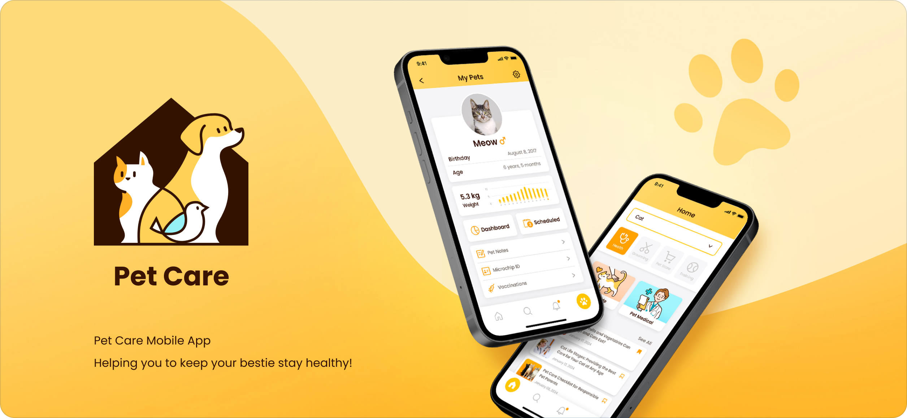
從零開始，定義一款照護型 App
在還沒有既有系統可以延續的情況下，需要先釐清飼主最在意的痛點，才能決定資訊架構與畫面優先順序。
資訊需要被好好收納
健康紀錄、疫苗提醒、體重追蹤、待辦事項⋯⋯這些資訊如果分散各處，飼主就容易漏掉重要的照護細節。
寵物種類多元，需要彈性分類
從狗貓到鳥、魚、兔子、爬蟲類，不同寵物需要不同的內容與版面配置，分類邏輯必須保有足夠彈性。
建立溫暖且值得信賴的體驗
面對每天照顧毛孩的飼主，介面需要傳達溫暖與安心感，而不只是一套冷冰冰的管理工具。
為毛孩打造的貼身照護夥伴
從飼主的日常需求出發，整理常見的照護問題並規劃對應功能，讓操作更直覺、資訊更好管理。
彈性的會員系統
支援 Email 註冊，也能透過 Facebook、Google、Apple 快速登入。
依寵物類型瀏覽
考量不同寵物的資訊需求，分別規劃對應內容，讓使用者快速切換並找到所需資訊。
健康與生活紀錄
體重曲線、疫苗接種、晶片編號、寵物筆記統一收納在同一份檔案。
行事曆與提醒
以月曆檢視每日待辦，餵藥、洗澡、刷牙提醒不再遺漏。
搜尋與通知
熱門搜尋詞與分類標籤協助快速找到照護知識，通知列表統一管理提醒訊息。
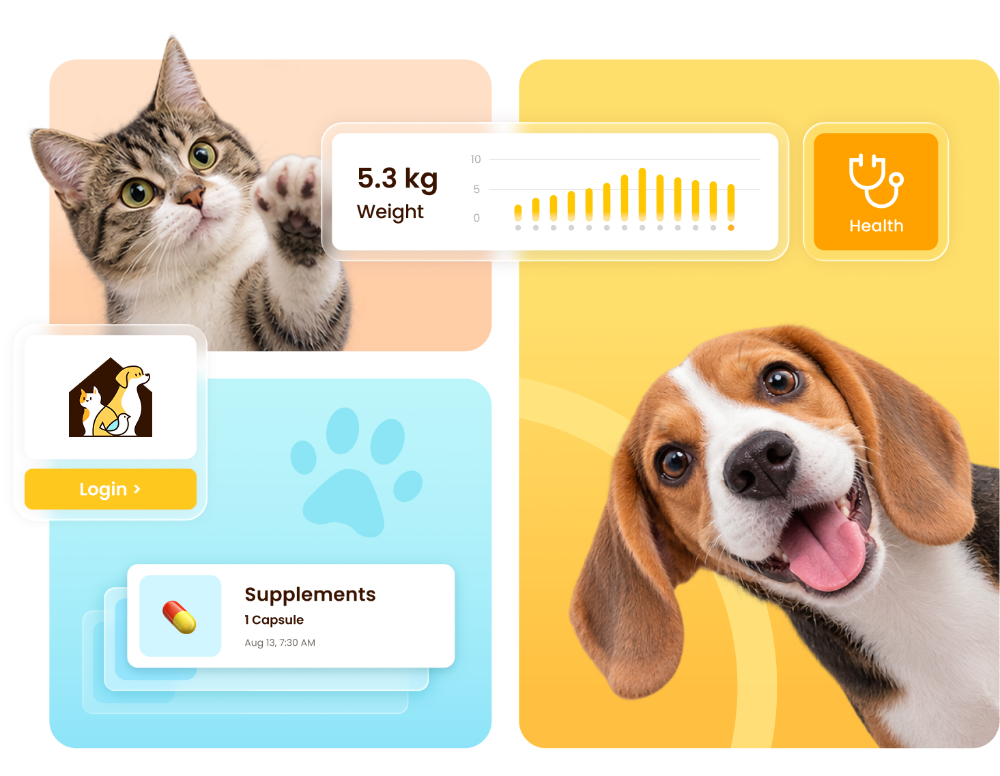
先畫清楚 User Flow，再進入架構規劃
在動手畫介面之前，先用 User Flow 釐清帳號系統、寵物檔案與行事曆之間的關係，確保每個畫面的存在都有明確的任務。
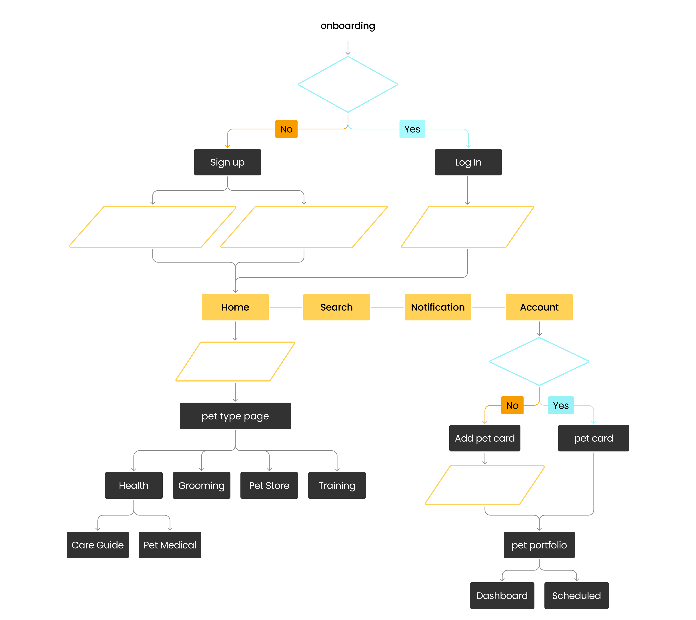
註冊 / 登入
提供 Email 註冊與第三方登入兩種路徑，降低新用戶的進入門檻。
選擇寵物類型
依飼養的寵物切換對應的健康知識與功能內容。
建立寵物檔案
填寫基本資料，建立專屬的 Pet Portfolio 檔案卡。
追蹤與提醒
Dashboard 記錄體重變化，Scheduled 排定每日待辦事項。
資訊架構與 Wireframe
依照 User Flow 逐一規劃對應頁面，透過 Wireframe 梳理並驗證資訊層級、內容配置與使用動線，建立清晰且連貫的網站架構，為後續介面設計奠定基礎。
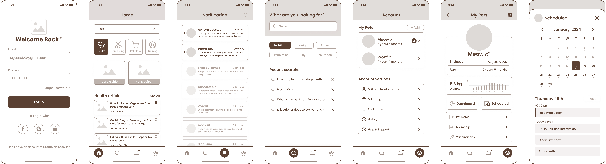
從線框到高保真，逐步完成的介面設計
依照使用者流程，將先前規劃的 Wireframe 逐一實現為帶有品牌色彩與插畫細節的完整畫面，呈現從帳號、首頁、搜尋到寵物檔案與行事曆的完整視覺樣貌。
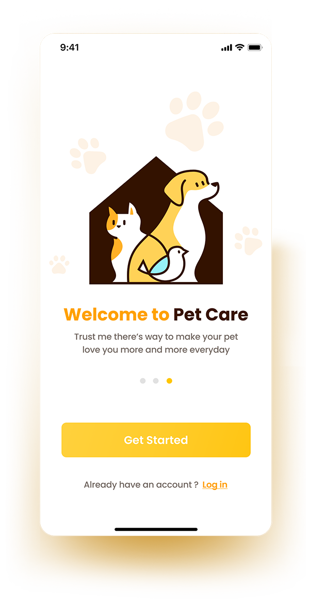
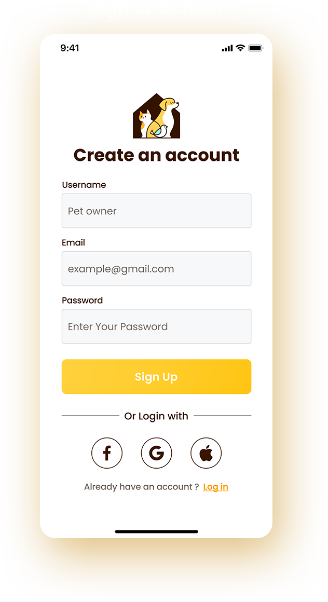
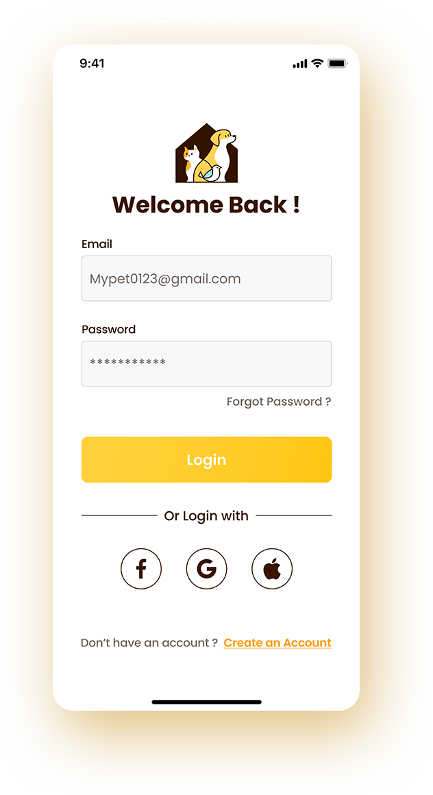
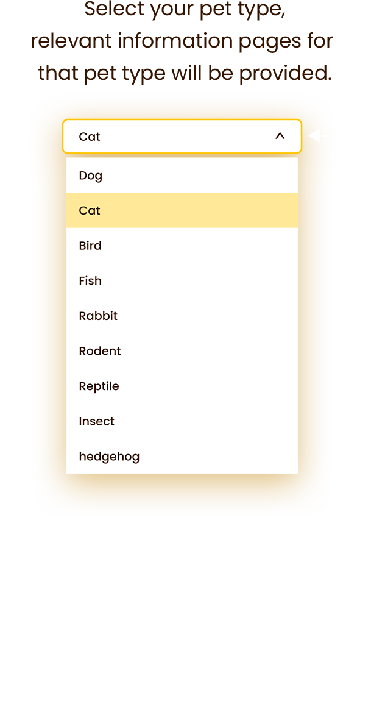
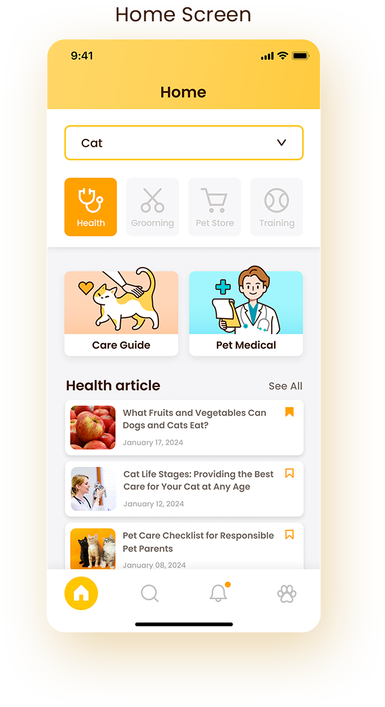
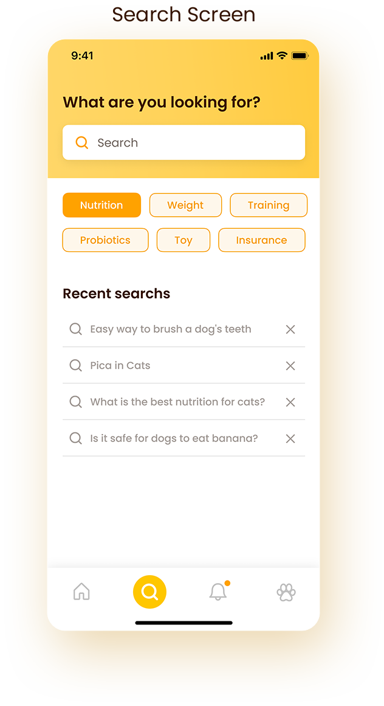
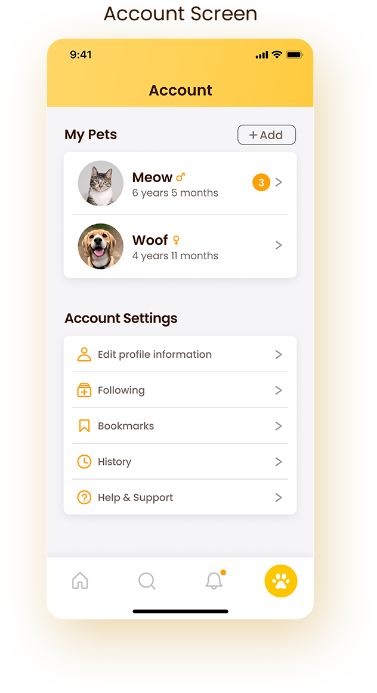
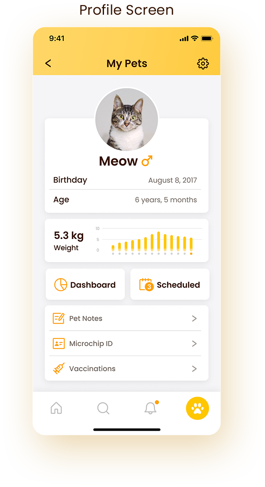
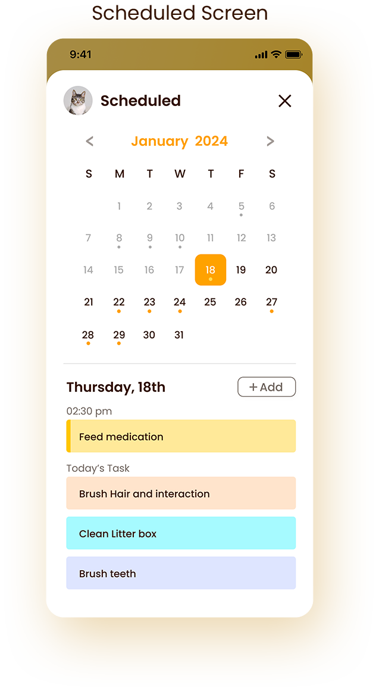
實際操作畫面
透過短片呈現核心操作流程，從啟動畫面、註冊登入，到瀏覽首頁、開啟寵物檔案卡與查看每日待辦，完整展示主要功能與使用體驗。
建立可延展的元件庫
把輸入框、選單、Tab、行事曆、按鈕等常用介面整理成統一規範的元件庫，確保新增畫面時能維持一致的操作邏輯與視覺語言。
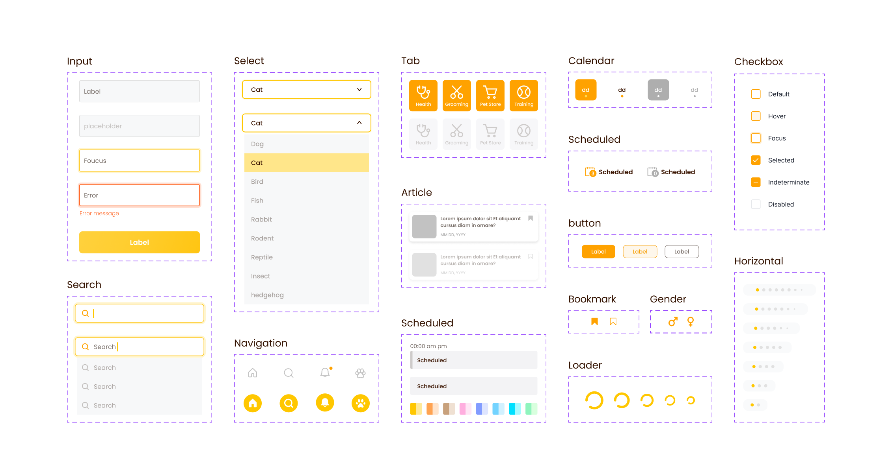
溫暖鮮明的品牌色彩與字體系統
以 Poppins 作為主要字體，搭配黃橘色調與少量對比色，打造兼具專業感與親和力的介面風格。
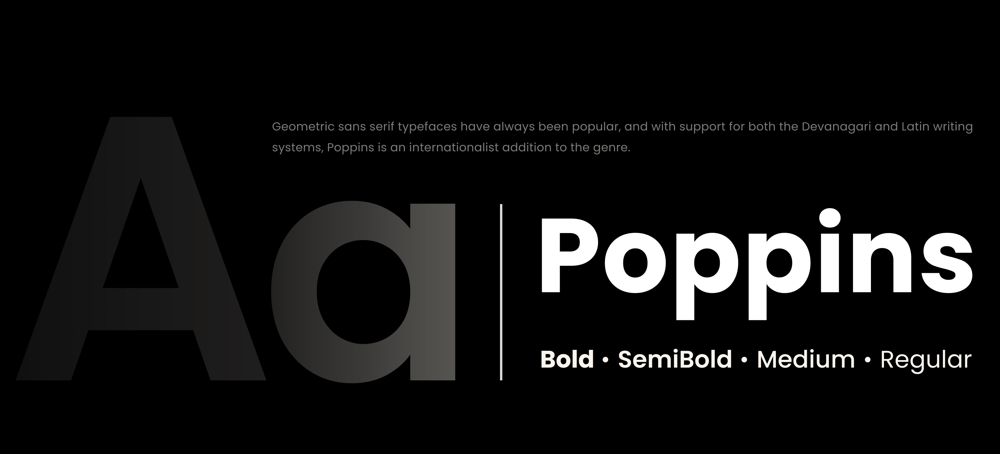
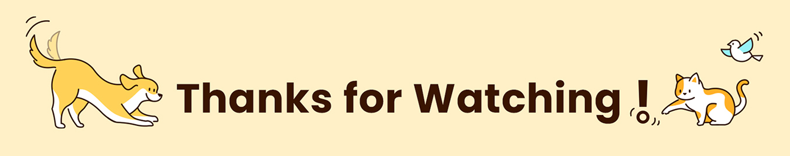